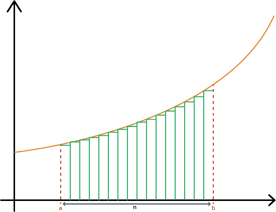

Méthode des rectangles¶
-
i_rect.rectangles(f, a, b, n)[source]¶ Voici la fonction qui calcule l’intégrale d’une fonction donnée en paramètre par la méthode des rectangles
Parameters: - f (function) – la fonction dont on calcule l’intégrale par la méthode des rectangles
- a (float) – le début de l’intervalle
- b (float) – la fin de l’intervalle
- n (int) – le nombre de pas (i.e. d’intervalles)
Returns: la valeur de l’intégrale
Return type: float